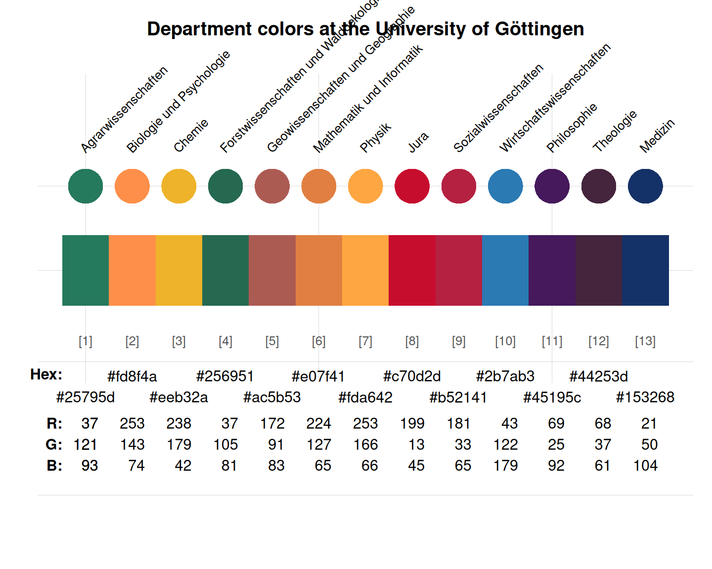
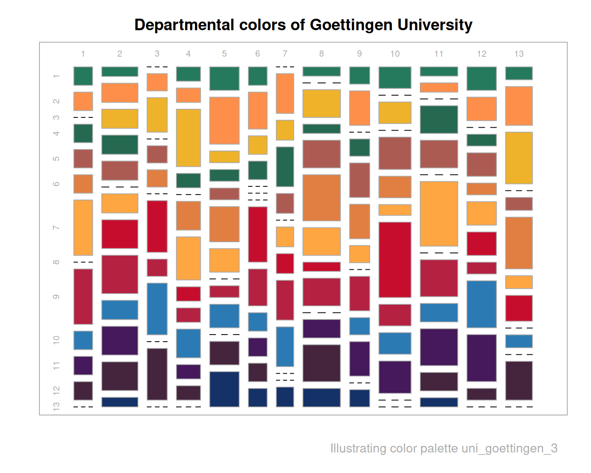

Departmental colors of the University of Göttingen, Germany
Source:R/Uni_Goettingen.R
uni_goettingen_3.Rduni_goettingen_3 provides the 13 departmental colors
(German "Fakultäten") of the University of Göttingen, Germany.
Source
Color definitions are based on https://www.uni-goettingen.de/de/589412.html.
Details
These colors are used in online and print materials of these departments.
uni_goettingen_3 corrects an error in the color definitions
of https://www.uni-goettingen.de/de/589412.html,
where the color definition for "Theologie" provided non-corresponding RGB and HEX values.
We adopted RGB 68/37/61 and the corresponding HEX #44253d values.
See also
uni_goettingen_1 and uni_goettingen_2 for alternative colors of the University of Goettingen;
seecol for viewing and comparing color palettes;
usecol for using color palettes;
simcol for finding similar colors;
newpal for defining new color palettes;
grepal for finding named colors.
Other German university color palettes:
fu_0_2023,
fu_1,
fu_1_2023,
fu_2,
fu_2_2023,
fu_3,
fu_3_2023,
fu_4,
hu_1,
hu_1_2022,
hu_1_digital,
hu_2,
hu_2_2022,
hu_3_accent,
lmu_1,
lmu_2,
lmu_3,
rptu,
uni_bonn_1,
uni_bonn_2,
uni_freiburg_0,
uni_freiburg_1,
uni_freiburg_2,
uni_freiburg_blue,
uni_freiburg_br,
uni_freiburg_grey,
uni_freiburg_info,
uni_goettingen_1,
uni_goettingen_2,
uni_halle,
uni_hamburg_1,
uni_hamburg_2,
uni_heidelberg,
uni_jena_1,
uni_jena_2,
uni_kassel,
uni_kiel_1,
uni_kiel_2,
uni_koeln_1,
uni_koeln_2,
uni_konstanz_1,
uni_konstanz_2,
uni_magdeburg_1,
uni_magdeburg_2,
uni_magdeburg_3,
uni_mannheim_1,
uni_mannheim_2,
uni_potsdam,
uni_regensburg_1,
uni_regensburg_2,
uni_regensburg_3,
uni_stuttgart_1,
uni_stuttgart_print,
uni_ulm_1,
uni_ulm_2
Examples
uni_goettingen_3
#> Agrarwissenschaften Biologie und Psychologie
#> "#25795d" "#fd8f4a"
#> Chemie Forstwissenschaften und Waldoekologie
#> "#eeb32a" "#256951"
#> Geowissenschaften und Geographie Mathematik und Informatik
#> "#ac5b53" "#e07f41"
#> Physik Jura
#> "#fda642" "#c70d2d"
#> Sozialwissenschaften Wirtschaftswissenschaften
#> "#b52141" "#2b7ab3"
#> Philosophie Theologie
#> "#45195c" "#44253d"
#> Medizin
#> "#153268"
unikn::seecol(uni_goettingen_3, main = "Department colors at the University of Göttingen")

unikn::demopal(uni_goettingen_3, type = 3, main = "Departmental colors of Goettingen University")
